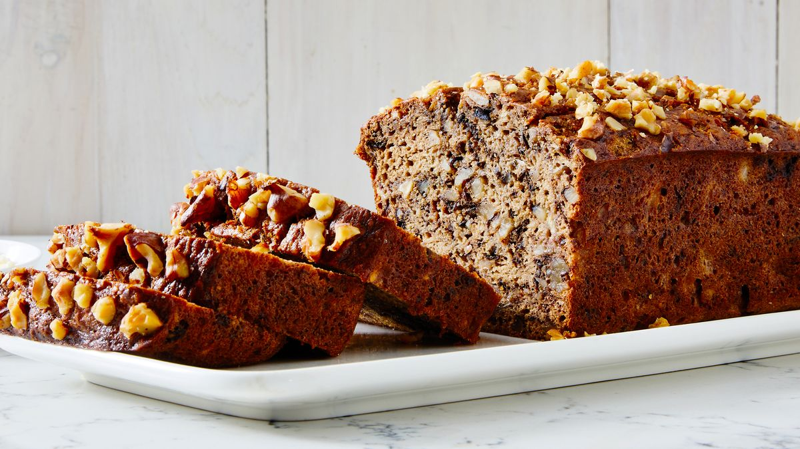

Banana Nut Bread

Description
Banana nut bread is a delightful and comforting baked treat that tantalizes the taste buds with its rich and moist texture, sweet banana flavor, and a satisfying crunch from the chopped nuts. This classic quick bread is a perfect fusion of overripe bananas, which impart a natural sweetness and a unique moistness to the batter, and a generous amount of chopped nuts, usually walnuts or pecans, adding a delightful crunch and nutty undertones to every bite. The combination of these ingredients creates a harmonious symphony of flavors and textures, making banana nut bread a beloved favorite for breakfast or as a sweet snack.
The aroma of banana nut bread baking in the oven is enough to evoke feelings of warmth and nostalgia. Whether enjoyed fresh out of the oven, slathered with butter, or sliced and toasted for an extra layer of decadence, this timeless classic has a way of bringing people together, creating cherished moments around the simple pleasure of homemade goodness.
Ingredients
- 3 ripe bananas, mashed
- 2 large eggs
- 1/2 cup unsalted butter
- 1 teaspoon vanilla extract
- 1 cup granulated sugar
- 1 3/4 cups all-purpose flour
- 1/2 teaspoon salt
- 1 teaspoon baking soda
- 1/2 teaspoon salt
- 1 cup chopped nuts (walnuts or pecans)
Steps
- Preheat the Oven:
Preheat your oven to 350°F (175°C). Grease a 9x5-inch loaf pan to prevent sticking.
- Prepare the Wet Ingredients:
In a large mixing bowl, mash the ripe bananas with a fork or potato masher until smooth. Add the melted butter, beaten eggs, vanilla extract, and granulated sugar. Mix well until the ingredients are thoroughly combined.
- Combine Dry Ingredients:
In a separate bowl, whisk together the all-purpose flour, baking soda, baking powder, and salt. Gradually add the dry ingredients to the wet ingredients, stirring until just combined. Be careful not to overmix, as this can lead to a dense texture.
- Add Nuts:
Gently fold in the chopped nuts of your choice (walnuts or pecans work well) into the batter. This adds a delightful crunch to the banana nut bread.
- Pour into Loaf Pan:
Pour the batter into the greased loaf pan, spreading it evenly.
- Bake:
Place the loaf pan in the preheated oven and bake for approximately 60-70 minutes, or until a toothpick inserted into the center comes out clean or with a few moist crumbs. Baking times may vary, so keep an eye on it.